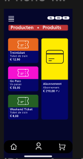
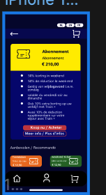
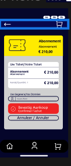
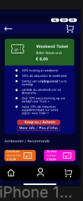
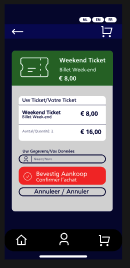
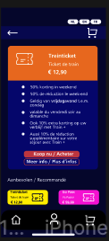
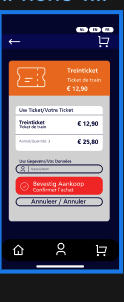
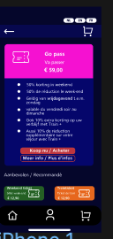
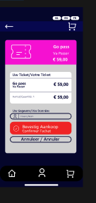

10 november 2025
Deze week werkte ik aan een uitbreiding binnen mijn trein-app: een eenvoudige “producten”-flow om tickets te bekijken en aan te kopen. Ik ontwierp meerdere tickettypes met een duidelijke visuele codering (kleur + icon) en bouwde een basis aankoopflow met een bevestigingsscherm. De focus lag op overzicht, consistentie en meertalige duidelijkheid.








